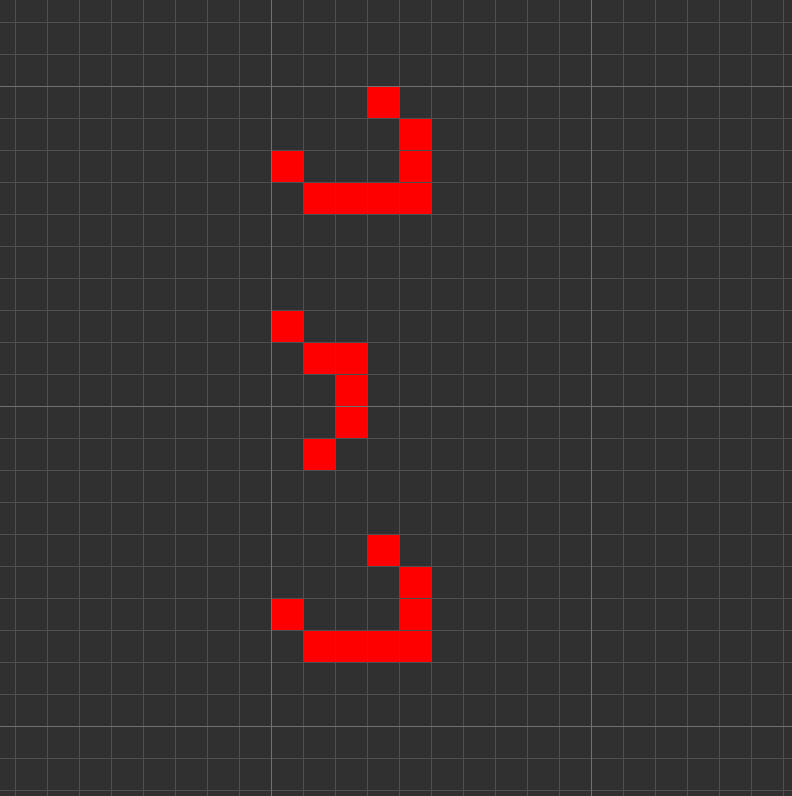

rle := run length encoding, a lossless compresison format used to save grid states + rules in Life-like cellular automata.
For example:
x = 5, y = 18, rule = B3/S23
3bo$4bo$o3bo$b4o4$o$b2o$2bo$2bo$bo3$3bo$4bo$o3bo$b4o!
Stores the size of the pattern, the rule, and the binary cell states for a puffer pattern in Conway's Life:
